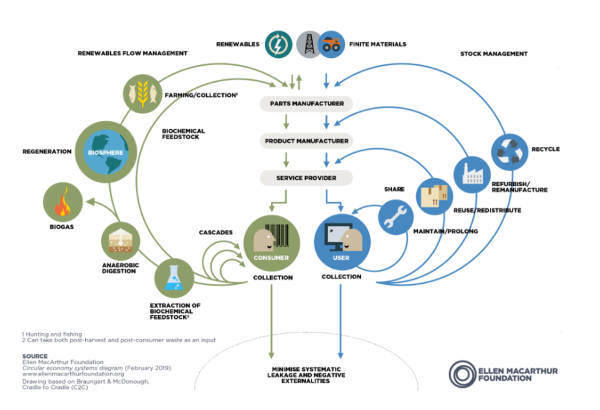

サーキュラーエコノミーとは、廃棄物を出さずに循環させる
リサイクルやリユースとはまた違うものである
また、このサーキュラーエコノミーを視覚的に示した図を
バタフライダイアグラムという この図は生物系循環と技術系循環がある

生物系循環と技術系循環の違い地は、地面より下の素材を使うものが後者であることだ
バタフライダイアグラムで重要なことは、外側になるにつれてエネルギーやコストがかかる
よってシェアが内側にあるのは、利用者にモノの所有権を与えず新しいモノを
生み出さずに済むからである
サーキュラーエコノミーのメリットは廃棄物を出さないことにある
しかし、デメリットとしては生物系の素材と技術系の素材が混ざった
製品の活用についてはどうなるのか また、コストがよりかかってしまうところも課題だ
そして、グループでの話し合いの中では中古品の性能の問題であったり、シェアサービスの
アクセスの問題であったり、衛生的な問題であったりが挙げられた